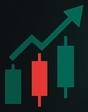

Idee operative, formazione e strumenti per il trading sul Forex, in una community gratuita su Telegram. Il conto resta tuo, le decisioni pure.
Entra gratis su Telegram →Diario di trading in regaloGratisEsci quando vuoi
I CFD comportano un alto rischio di perdere denaro.
Siti, app e AI su misura · Fuoriserie Studio →
Scorri · tocca per i dettagliAnche: Diario · gratisAcademyStrumenti AICopy trading · in arrivo
Il broker ci riconosce una commissione: tu non paghi abbonamenti.
Entri nella communityUn tocco, si apre Telegram. Gratis.
Guardi come lavoriamoSenza impegno, quanto vuoi.
Scegli tuSe e quale servizio usare. O esci.
I CFD sono strumenti complessi e comportano un alto rischio di perdere denaro rapidamente a causa della leva finanziaria. Valuta se comprendi il funzionamento dei CFD e se puoi permetterti di correre l'alto rischio di perdere il tuo denaro. Contenuti a scopo informativo ed educativo, non consulenza. Il grafico dell'oro in alto è indicativo: prezzo spot XAU da gold-api.com, andamento delle 24 ore da PAXG/USDT (Binance) riscalato sullo spot; può differire dalle quotazioni del broker.